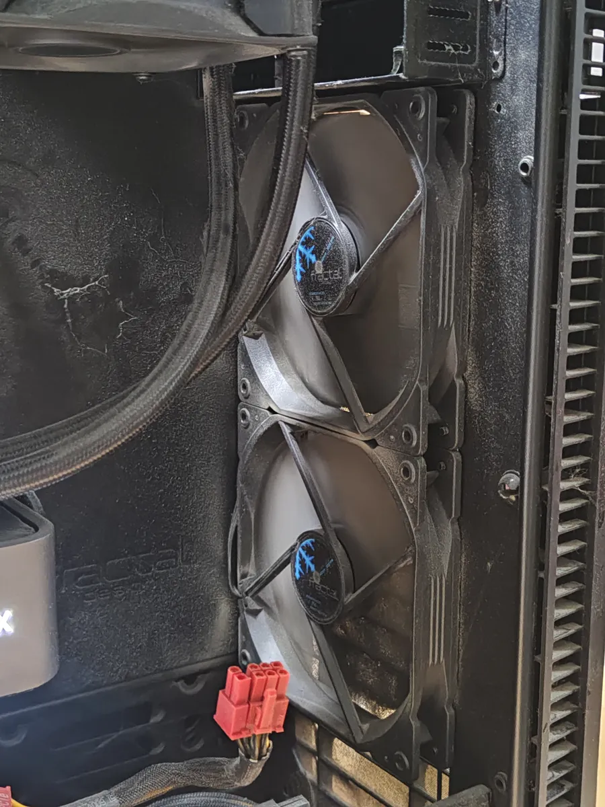
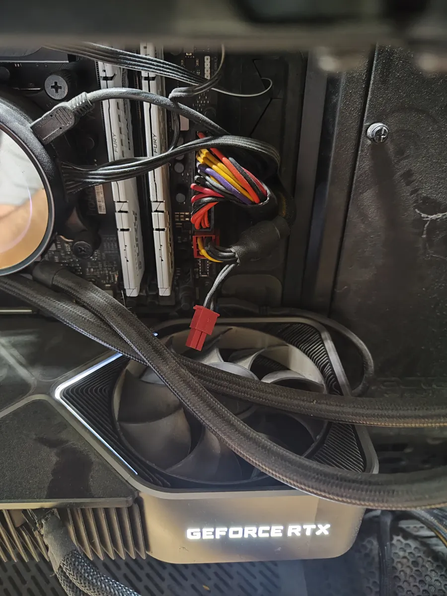
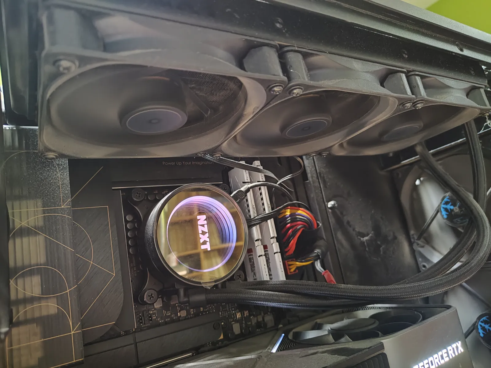
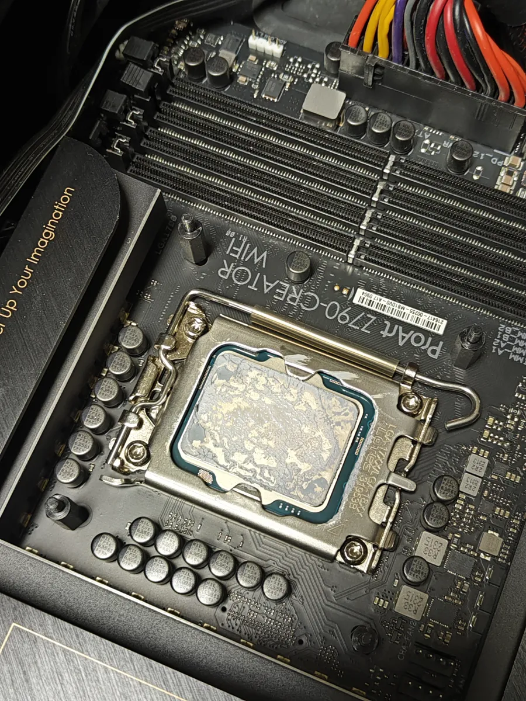
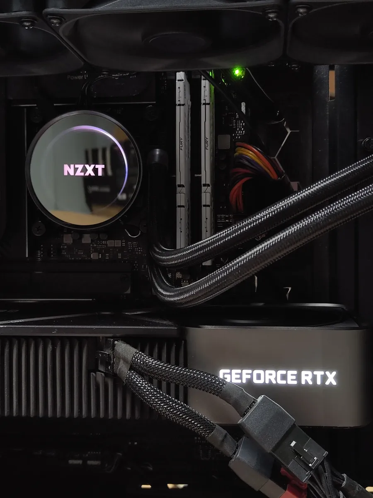
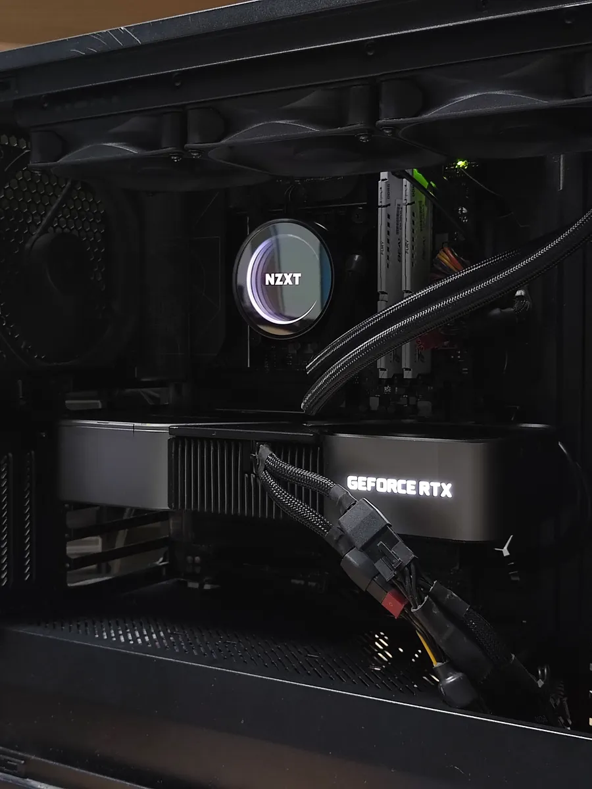
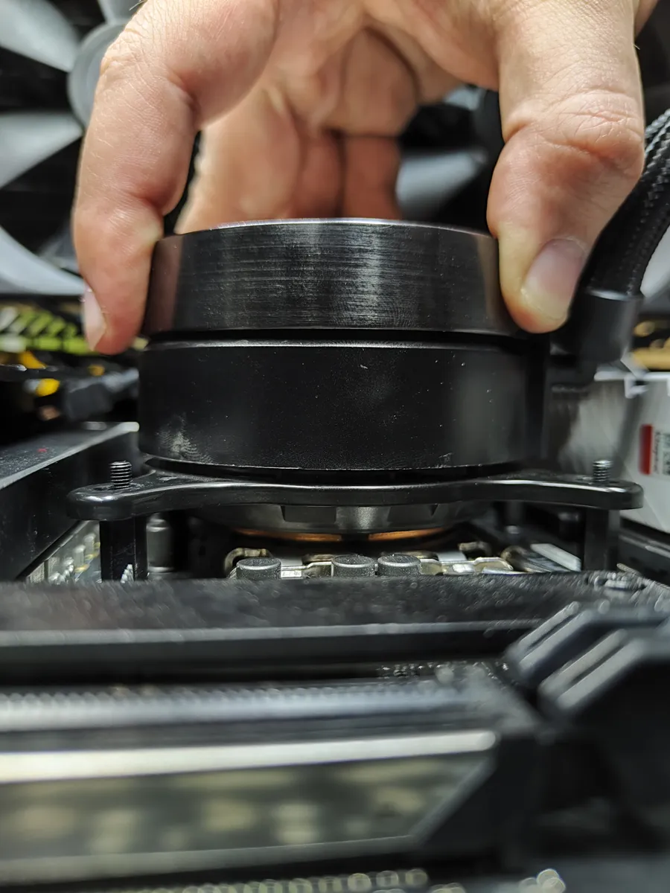
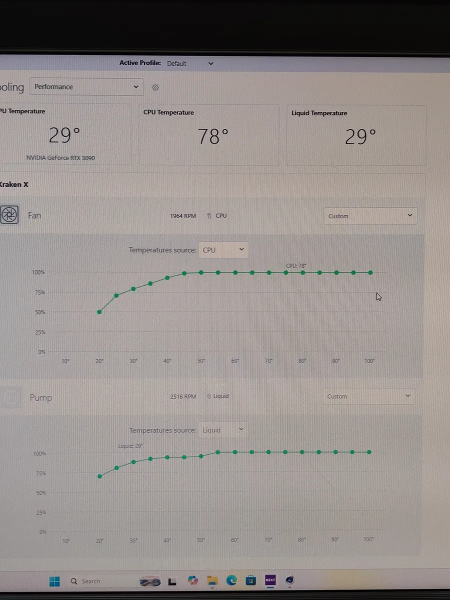
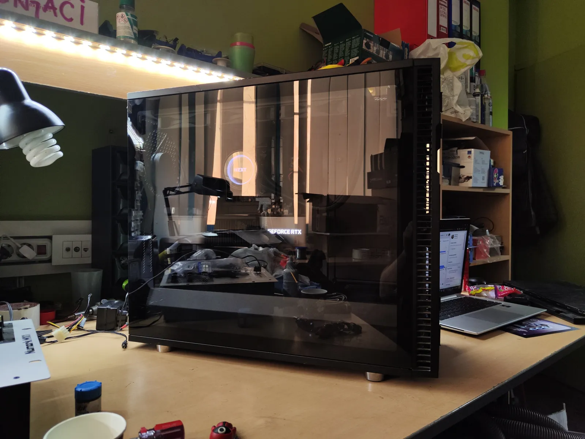

Completed Build











B/A
- Usluga: Premium Servis & Termalna Revizija
- Problem: Preterano grejanje i7-14700K
- Rešenje: Improvizovani stand-off-ovi & Pozicioniranje
- Rezultat: -20°C niže temperature bez gubitka performansi
Intel Core i7-14700K
Premium Servis & Rešenje Termike
Rešili smo problem ekstremnog pregrevanja i7-14700K procesora. Zbog izgubljenih fabričkih stand-off-ova, uspešno smo improvizovali sa gumicama, pravilno pozicionirali hlađenje i odradili detaljno čišćenje.
Uz svežu instalaciju sistema i duboku softversku optimizaciju, temperature su pale za više od 20 stepeni, a sistem radi stabilno pod maksimalnim opterećenjem bez ikakvog gubitka performansi.